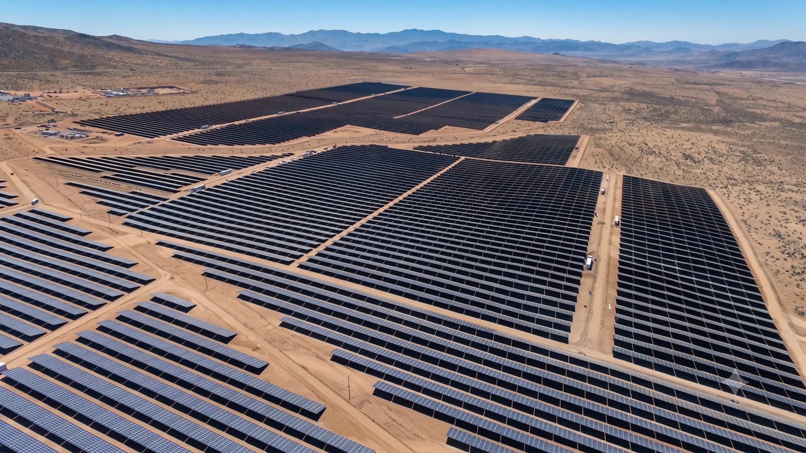
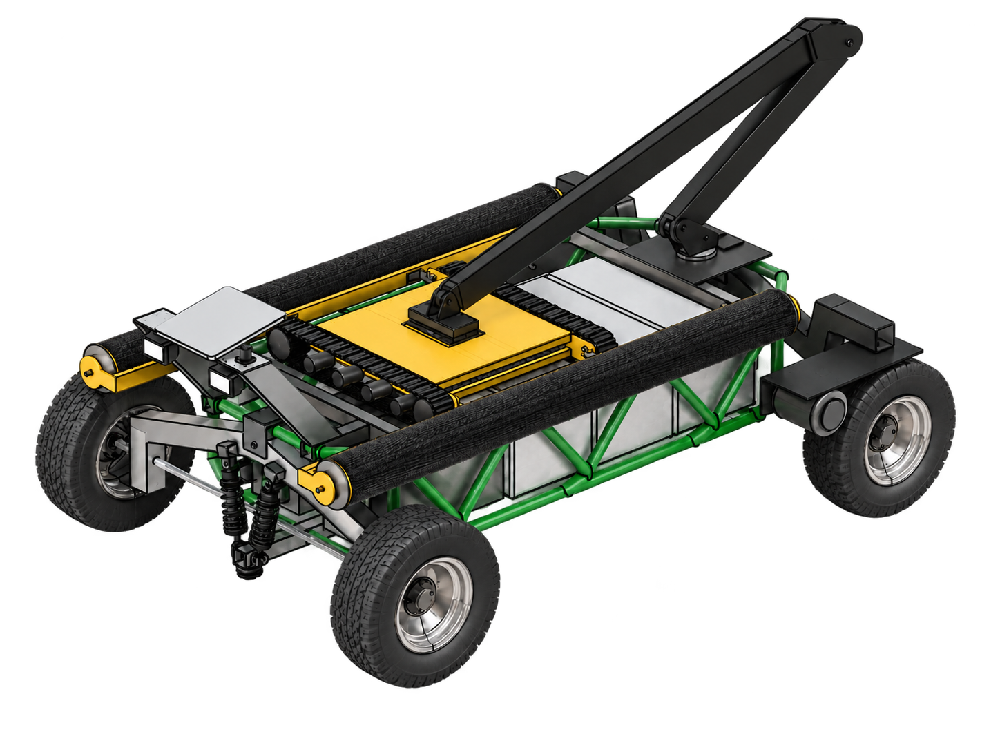
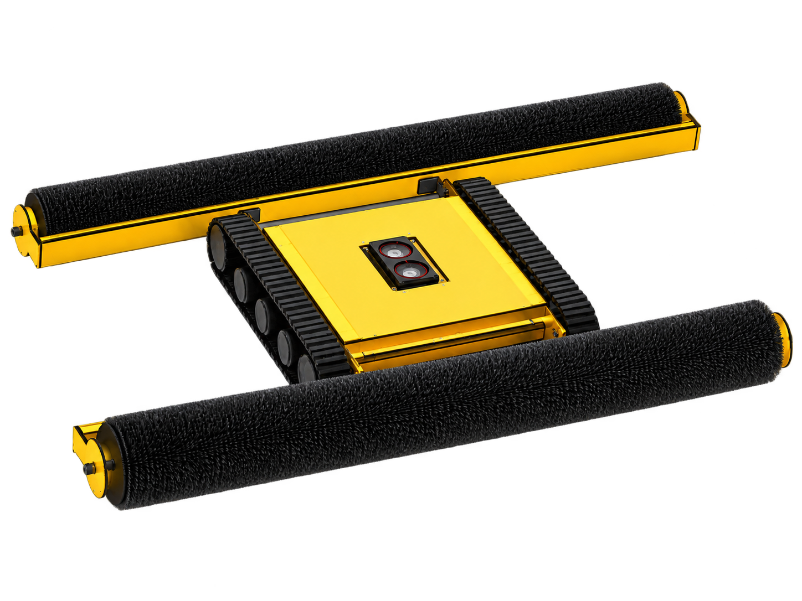
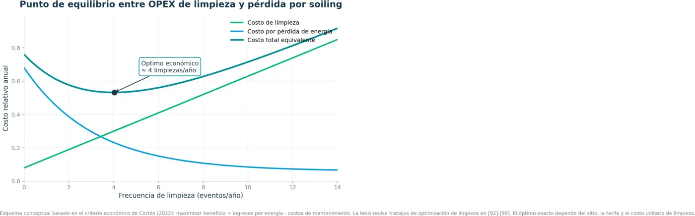
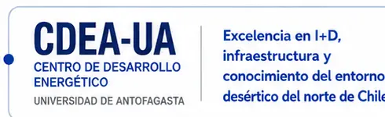

Operación convencional
Una cadena dependiente de personas y traslados
- 01Frecuencias rígidas o reactivas
- 02Cuadrillas y equipos en terreno
- 03Logística intensiva de agua
- 04Resultados con baja trazabilidad

Combinamos robots autónomos, monitoreo en línea y análisis económico para limpiar cuando realmente conviene: con la frecuencia que maximiza las ganancias.


Limpiar demasiado tarde acumula pérdidas por soiling. Limpiar demasiado pronto suma costos sin recuperar suficiente energía. STX cruza las variables de cada planta para encontrar el punto económico óptimo.

La recomendación se recalcula con datos reales; no es una frecuencia fija para todas las instalaciones.
En plantas remotas, el costo real incluye cuadrillas, traslados, agua, coordinación y falta de evidencia. Nuestro sistema integra toda la operación y convierte cada recorrido en información útil.
La plataforma base gestiona navegación, recursos y posicionamiento. El robot compacto se desplaza sobre los módulos y realiza la limpieza. Ambos operan coordinados y bajo supervisión remota.
Se traslada por la planta, transporta el robot limpiador y lo posiciona sobre cada rack. Gestiona agua, energía y comunicaciones durante el recorrido.
Avanza por el string mediante orugas y rodillos de nylon, con dosificación controlada para remover la suciedad sin depender de una cuadrilla en cada fila.
Visualizaciones del diseño actual. Las fotografías del prototipo podrán reemplazar estas imágenes sin modificar la estructura del sitio.
Diseño y desarrollo realizados en Chile para responder a las condiciones locales.
Asistencia y mantenimiento provistos por el mismo equipo que desarrolla la tecnología.
Software, rutas y parámetros mejoran para elevar la eficiencia operacional.
El robot opera de forma autónoma, mientras STX monitorea su estado y desempeño.
Cada misión genera avance, consumos, alertas y evidencia trazable.
Múltiples robots pueden compartir recursos y trabajar dentro de una misma planta.
La operación se planifica como un sistema: rutas eficientes, limpieza coordinada, recargas automáticas y trazabilidad desde el centro de monitoreo.
La plataforma se desplaza entre los racks, identifica el string asignado y coordina su misión con los demás robots de la planta.
Este espacio alojará el video completo del sistema: planificación de rutas, traslado autónomo, limpieza, recarga y coordinación de múltiples robots.
Además de limpiar, la plataforma puede capturar información para priorizar mantenimiento, reducir pérdidas y respaldar decisiones. Selecciona un servicio para conocer su beneficio.
STX provee la tecnología, monitoreo, soporte, actualizaciones y continuidad operacional. El cliente contrata capacidad de limpieza y resultados verificables.
Evaluar modalidad ↗La plataforma de clientes centralizará operación, consumo, hallazgos y rendimiento. La autonomía reduce intervención en terreno; el monitoreo mantiene el control.
Combinamos validación técnica con una red operacional preparada para abastecer, transportar, mantener y comunicar la solución en terreno.

Colaboración para validar la solución en condiciones del desierto chileno, estudiar polvo y métodos de limpieza, y optimizar rodillos, materiales y parámetros con evidencia técnica.
Proveedores para abastecimiento planificado y control de calidad del agua.
Apoyo para despliegue, reposición y continuidad en emplazamientos remotos.
Capacidad nacional para producir, mantener y evolucionar los equipos.
Conectividad para telemetría, monitoreo y soporte desde el centro de control.
Comparte los datos básicos de la instalación. Prepararemos una evaluación preliminar del servicio, su logística y el potencial económico.
Revisamos tamaño, ubicación y condiciones de operación.
Modelamos soiling, costos y valor de la energía.
Proponemos frecuencia, cobertura y configuración robótica.